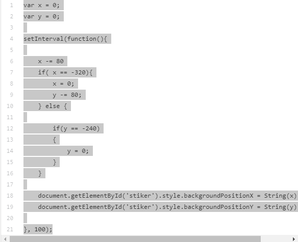
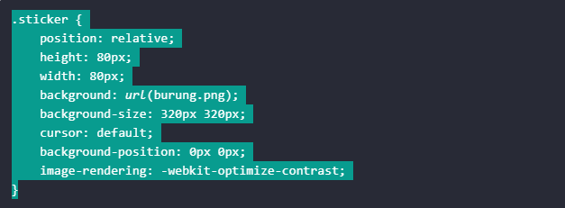
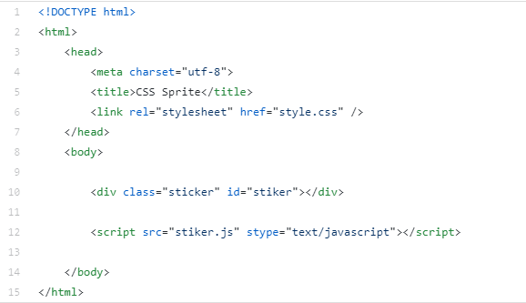

Apa itu Java script?
JavaScript adalah salah satu bahasa pemrograman yang paling banyak digunakan dalam kurun waktu dua puluh tahun ini. Bahkan JavaScript juga dikenal sebagai salah satu dari tiga bahasa pemrograman utama bagi web developer.
Mari siapkan kopi, laptop, dan penyegar lainnya
Berikut Java scriptnya teman teman, java sciptnya berguna untuk membuat animasi dan membuat gambar. Terlihata di gambar menjelaskan posisi x dan y sticker tersebur mengguna var x dan y didalam fungsi set interval.
Berikut code untuk css nya, seperti biasa mengatur widrth height dan lainnya dan mengatur gambar burung tersebut di dalam css, dan pointer default itu agar ketika curor kita sedang di hover di sticker tersebut tetap berbentuk cursor bukan pointer.
Berikut untuk code HTML nya, Terlihat menggabungkan halaman html dengan css dan javascriptnya
Pada kode di atas kita menggunakan fungsi setInterval() untuk melakukan animasi dengan waktu 100 milidetik. Setiap rentang waktu tersebut, posisi background akan berubah sesuai dengan nilai x dan y.
Nah kalian boleh coba dengan kode diatas dan hasilnya akan seperti di bawah ini teman-teman